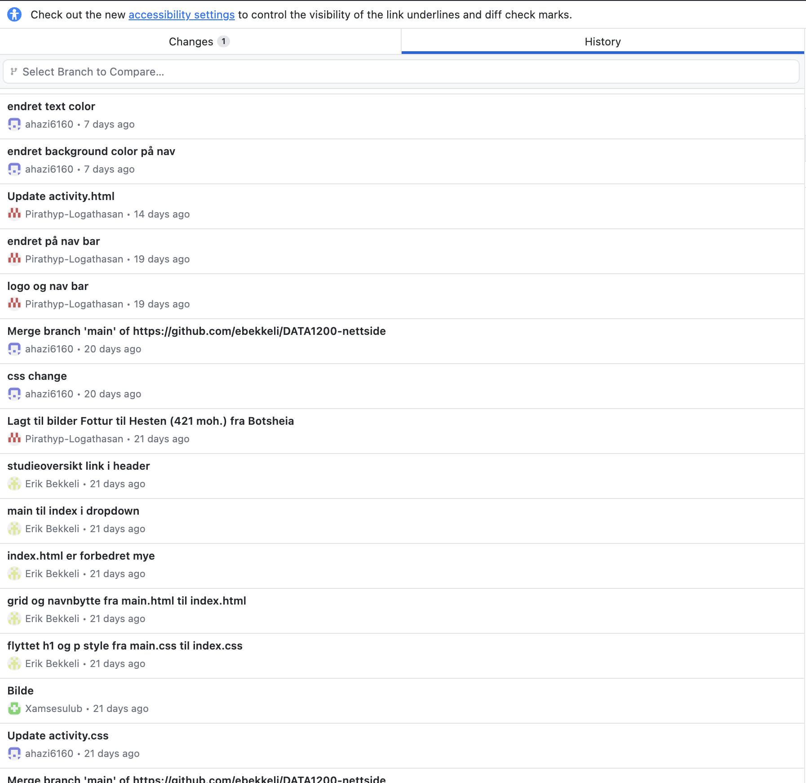
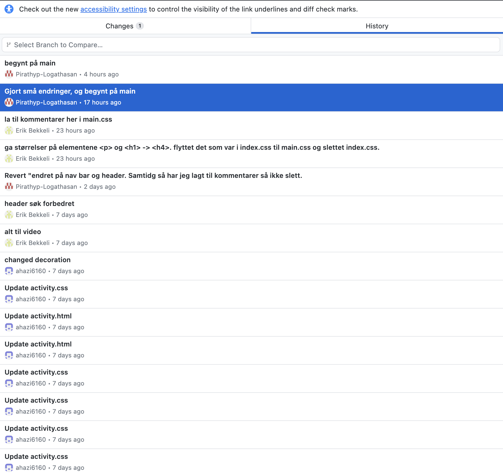
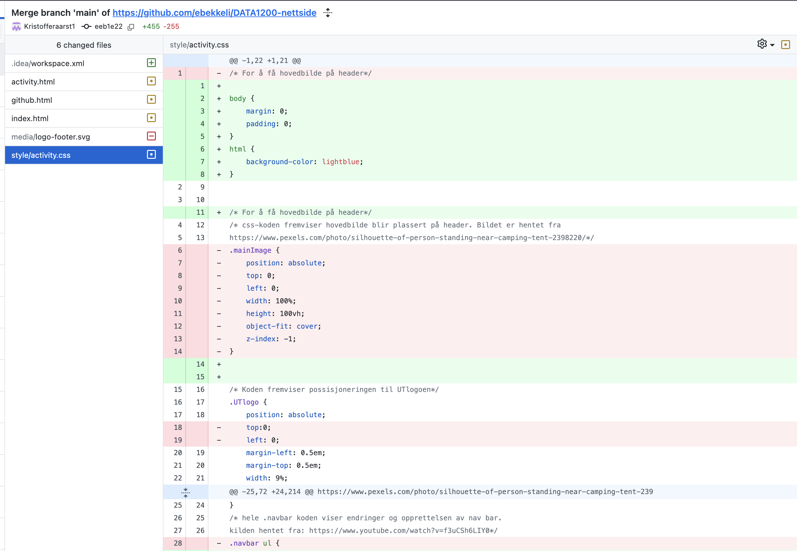
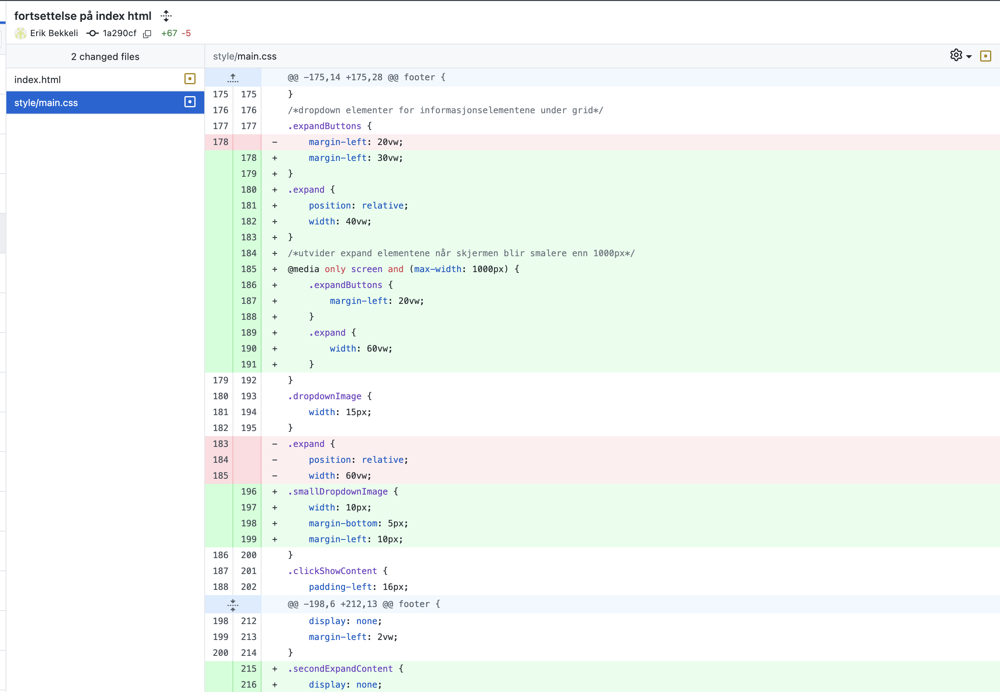

Collaboration in GitHub
Commit History
Commit history in GitHub allows team members to track changes incrementally, enabling a clear view of modifications made over time. Below are examples of how a collaborative project evolves through small, frequent commits.


Specific Changes
In GitHub, specific changes in each commit provide transparency, showing exactly what has been modified. This helps team members understand contributions and resolve conflicts efficiently.


Benefits of Git & GitHub
- Control and Collaboration: GitHub is built on Git, a powerful version control system that allows multiple people to work on the same project simultaneously. Changes are tracked, making it easy to collaborate, view differences, and merge updates without overwriting others' work.
- Teamwork: Github makes collaborating on a task in real time completely possible. Multiple people can work on the same code without stepping on each other toes. With pull requests and code reviews, you share your ideas and methods with the rest of the collaborators. Therefore, we have learnt a lot from each other, and also gotten a good insight whenever someone needs help.
- Learning from Mistakes: Git and GitHub are amazing tools for beginners because they let you see exactly where something went wrong and give you the chance to fix it without too much worry. If you make a mistake, you can look back at the history to understand what happened, learn from it, and adjust. In addition, features like branches and the ability to revert changes make it safe to experiment and try new things without messing up the main project. It is a big confidence boost knowing mistakes are not permanent and every error helps you get better.
- Transparency and Accountability: Every commit in GitHub is associated with a specific user, making it clear who made each change. This transparency fosters accountability within teams and helps project managers track contributions effectively